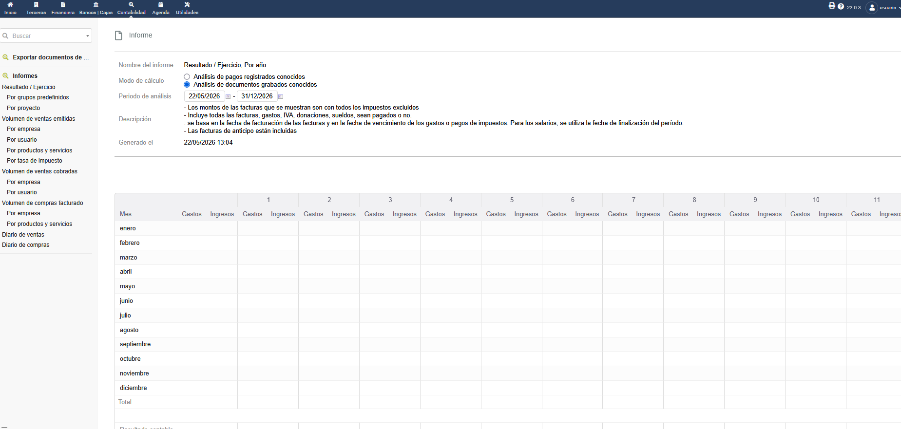

Informes y exportación
Toda la información introducida en el SGE se puede consultar en forma de informes o exportar a otros formatos para analizarla fuera del sistema.
Informes integrados
Dolibarr incluye varios informes desde el menú Contabilidad → Informes. Los más utilizados son:
| Informe | Qué muestra |
|---|---|
| Volumen de negocio | Facturación por mes y año. |
| Ventas por cliente | Ranking de clientes por facturación. |
| Ventas por producto | Productos más vendidos. |
| Estado de stock | Existencias actuales y productos bajo mínimo. |
| Cobros y pagos | Calendario de cobros previstos y pagos pendientes. |

Captura 10: Informe de volumen de negocio
Cuadro de mando
La pantalla de inicio de Dolibarr es un cuadro de mando que muestra de un vistazo: facturas pendientes, presupuestos en curso, gráficos de ventas y tareas del día.
Cada usuario puede personalizar qué información ver desde el botón Personalizar el cuadro de mando.
Estadísticas por módulo
Además, cada módulo (Facturas, Productos, Terceros…) tiene su propia pestaña de Estadísticas con gráficos interactivos.
Exportación de información
Dolibarr permite exportar los datos en varios formatos:
CSV
Texto plano separado por comas. Lo lee cualquier hoja de cálculo.
Excel
Formato XLSX. Mantiene fechas, números y monedas.
Documento listo para imprimir. Útil para informes definitivos.
Asistente de exportación
Desde Inicio → Herramientas → Exportar se puede crear una exportación personalizada en cuatro pasos:
- Elegir el tipo de datos (facturas, terceros, productos…).
- Seleccionar los campos que se quieren incluir.
- Aplicar filtros (fechas, importes, estado…).
- Elegir el formato (CSV, Excel, TSV) y descargar.
Caso de uso: al final del trimestre, el asesor fiscal pide la relación de facturas. Con el asistente se genera un Excel con NIF, fecha, base imponible, IVA y total. Se manda y listo.
Importar datos
Dolibarr también permite la operación inversa: importar listados desde un CSV o Excel. Es la forma habitual de migrar datos al cambiar de programa.
Consejo: antes de cualquier importación masiva, hacer una copia de la base de datos. Si algo sale mal, restaurarla es mucho más rápido que limpiar los datos a mano.